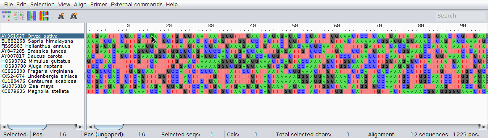
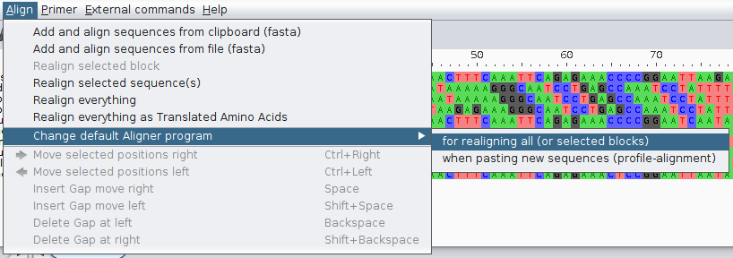
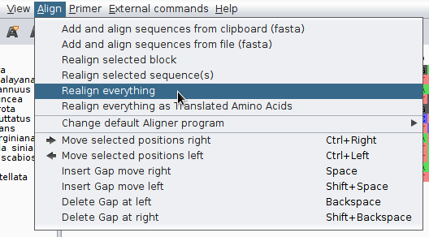
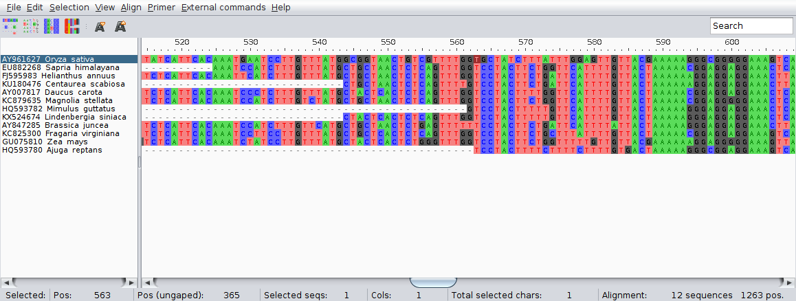
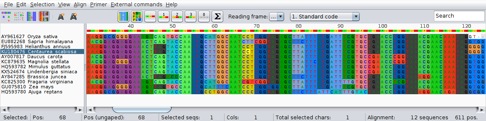
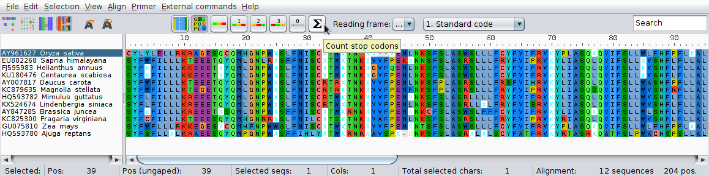
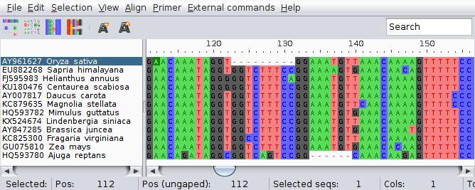
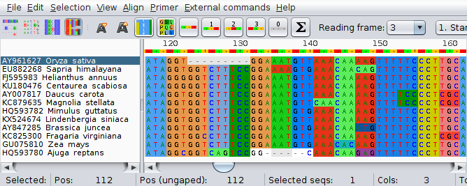
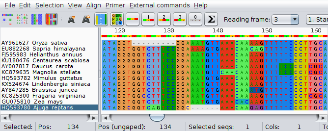

Dopasowanie sekwencji
Kolejnym etapem budowania drzew filogenetycznych jest dopasowanie sekwencji. Jest to bardzo ważny proces, złe dopasowanie sekwencji skutkuje utworzeniem nieprawidłowych drzew.
Etapy i programy
Po zebraniu sekwencji w pliku FASTA przechodzimy do ich dopasowania. Dopasowanie można wykonywać przy pomocy programów uruchamianych z linii komend. Kolejnym etapem jest ręczne poprawianie dopasowania zwykle połączone z przycinaniem zebranych funkcji. Ten etap najwygodniej jest wykonywać używając programów ,,okienkowych''. Programy z interfejsem graficznym zwykle mają także funkcje dopasowania sekwencji, często zresztą poprzez uruchamianie programów działających w linii komend.
Długą listę takich programów można znaleźć np. na Wikipedii
Programy dopasowujące wiele sekwencji uruchamiane z linii komend
Programów uruchamianych z linii komend jest wiele, zwykle każdy z nich używa osobnego algorytmu dopasowania lub jego modyfikacje. Należą do nich:
Można je zainstalować na Debianie lub innych debianopodobnych dystybucjach komendą (usuń nazwy programów, których nie chcesz instalować):
sudo apt-get install clustalw clustalo muscle mafft t-coffee prank
W internecie można także łatwo znaleźć strony, które umożliwiają procesu dopasowania online z wykorzystaniem tych (i innych) programów.
Programy z interfejsem graficznym do edycji dopasowań
W pracy z zestawami sekwencji praktyczne są programy z interfejsem graficznym, które posiadają szereg użytecznych funkcji ułatwiających ich porządkowanie i edycję. a także np. uruchamianie programów dopasowujących wstępnie sekwencje czy obliczanie i rysowanie drzew.
Praktyka: Proste dopasowanie sekwencji atp6
Pobierz z GenBank-u następujące sekwencje i zapisz je w pliku atp6-surowe.fasta:
AY007817 Daucus carota
AY847285 Brassica juncea
AY961627 Oryza sativa
EU882268 Sapria himalayana
FJ595983 Helianthus annuus
GU075810 Zea mays
HQ593780 Ajuga reptans
HQ593782 Mimulus guttatus
KC825300 Fragaria virginiana
KC879635 Magnolia stellata
KU180476 Centaurea scabiosa
KX524674 Lindenbergia siniaca
Zmień domyślne nazwy ,,GenBankowe'' na nazwy wg. schematu: nr_rodzaj_gatunek, np: AY007817_Daucus_carota. Wykonaj poprawki w edytorze tekstu. Zapisz jako atp6-surowe.fasta.
Zanim przejdziemy do dopasowania sekwencji w linii komend, użyjemy programu AliView, który można pobrać ze strony domowej programu: http://ormbunkar.se/aliview/. AliView pozwala na wygodne przeglądanie i edycję zestawu sekwencji a także posiada szereg innych przydatnych funkcji do których z pewnością należy możliwość uruchamiania programów dopasowujących sekwencje. Warto zajrzeć na stronę programu http://ormbunkar.se/aliview/ gdzie przedstawione są jego możliwości.
Uruchom AliView i otwóż plik z sekwencjami.

Aliview dopasowuje sekwencje używając zewnętrznych programów.
Można zmienić uruchamiany program wybierając z menu

Pokazuje się okno:

Tu można wybrać program z domyślnie udostępnionych przez program, dodać inne i dostosować opcje ich uruchamiania. Instrukcje można znaleźć na stronie programu. Teraz zmień program na Mutt (ten wyżej).
Wybierz z paska narzędziowego Align->Realign everything

Program zapyta czy na pewno dopasować sekwencje, zatwierdzamy. Pokazuje się okno z postępem pracy programu i w końcu widać wynik. Przesuń suwakiem na dole ekranu zestawienie sekwencji w prawo. Przyjrzyj się jak wyglądają dopasowane sekwencje.
Jak widać mają one różną długość, w końcu jednak znajduje się strefa dopasowania, która obejmuje odcinki wszystkich sekwencji, od 563 miejsca dopasowania. Przy okazji przyjrzyj się informacjom widocznym w pasku na dole okna. Są one dość jasne:

Teraz kliknij na czwartą ikonę od lewej. Zaznaczone zostają kolorami kodony odpowiadające różnym aminokwasom.

Pojawiają się także nowe ikony pozwalające na zmianę m. in. sposobu wyświetlania a także ustawienia początkowego nukleotydu dla odczytu kodonów. Domyślnie ,,translacja'' rozpoczyna się od pierwszej pozycji zestawienia. Prawidłową pozycję startu odczytywania kodonu można odczytać np. z GenBanku. Sprawdź dane dla sekwencji KU180476. Sprawdź gdzie zaczyna się prawidłowe miejsce początku pierwszego kompletnego kodonu w części wspólnej dopasowanych sekwencji.

Teraz wróć do domyślnego widoku sekwencji i zaznacz wszystkie kolumny na lewo od miejsca, w którym rozpoczyna się wspólna część sekwencji:

Następnie usuń je używając skrótu klawiszowego <Ctrl>+<Del> (warto go zapamiętać) lub odpowiedniej pozycji w pasku menu: Edit->Delete selected.
Podobnie przytnij prawą część dopasowania.
Teraz znów możesz sprawdzić ,,translację'' sekwencji, przy okazji zauważ, że (co nie jest zaskoczeniem) przy złym ustawieniu miejsca początku kodonu pojawia się wiele miejsc STOP oznaczonych szarym kolorem.

Jeśli ustawimy podgląd za pomocą jednoliterowych oznaczeń aminokwasów, miejsca STOP będą wyświetlone jako litera x.

Teraz zastanów się, jak można znaleźć prawidłowe miejsce początku kodonów w działających genach, jeśli go nie znamy.
Wróć teraz do standardowego wyświetlania sekwencji i znajdź miejsce, w którym znajdują się indele w dwu sekwencjach. Zauważ, że pierwszym nukleotydem flankującym indel w sekwencji Oryza sativa jest G, który w zasadzie pasowałby równie dobrze po obu stronach indelu. Nieco inaczej jest w Ajuga reptans, tam nukleotyd C nie pasuje do żadnego nukleotydu w innych sekwencjach:

W ich prawidłowym umieszczeniu może pomóc podświetlenie kodonów:

Pamiętając, że indele w działających genach kodujących białka powinny obejmować trójki nukleotydów lub ich wielokrotność (inaczej zmienia się ramka odczytu), widać że G w pierwszej sekwencji zostało umieszczone prawidłowo, natomiast C przy drugim indelu należy przesunąć w lewo. Nukleotydy przesuwamy klikając na nie i przeciągając kursorem myszy, przy więcej niż jednym nukleotydzie należy wcześniej zaznaczyć odcinek, który chcemy przemieścić.
Teraz kodony są kompletne:

Zapisz plik jako atp6-dopasowane.fasta.
Przy pracy z AliView warto korzystać z licznych dostępnych opcji ułatwiających pracę. Przejrzyj te dostępne w menu, zazwyczaj łatwo domyślić się jakie mają zastosowanie.
Dopasowanie sekwencji z linii komend
Teraz przyszedł czas na dopasowanie sekwencji z użyciem linii komend. Najpierw użyjemy w tym celu programu muscle. Sprawdź jak go używać używając komendy:
muscle -h
lub
man muscle
W najprostszej formie podajemy plik wejściowy i nazwę pliku wyjściowego:
muscle -in atp6-surowe.fasta -out atp6-wyrownanie-muscle.fasta
Sprawdź plik wynikowy w Aliview.
Program mafft oferuje dużo więcej opcji niż muscle, uruchom:
man mafft
Jak widać można w tym programie ustawiać np. wartości kar za otwieranie czy wydłużanie indeli, co może być przydatne przy sekwencjach, które mają ich wiele, zaraz się z takimi spotkamy, na razie uruchom mafft bez dodatkowych opcji:
mafft atp6-surowe.fasta > atp6-wyrownanie-mafft.fasta
Po otwarciu pliku wynikowego w Aliview widać, mafft domyślnie zmienia wielkość liter w sekwencjach na małe, raczej tego nie chcemy, dlatego użyjemy opcji --preservecase
mafft --preservecase atp6-surowe.fasta > atp6-wyrownanie-mafft.fasta
Teraz pobierz sekwencje o poniższych numerach i zapisz je w pliku trnL-trnF-GB.fasta:
JX073793
KU238878
GU818008
KX524675
AY743457
AY575533
KU238873
KU238869
KU238874
KU238865
KU238864
KU238875
KU238866
KU238871
KU238876
KU238867
KU238877
KU238868
KU238872
KU238870
GU323356
Sugeruję zrobić to za pomocą skryptu. W takim wypadku sprawdź czy pierwsza linia pliku FASTA nie jest pusta, jeśli tak to usuń ją.
Zmień nazwy sekwencji wg. schematu dla sekwencji atp6.
Teraz spróbuj dopasować sekwencje za pomocą programu muscle.
Następnie spróbuj mafft, także z opcją --auto oraz --op (sprawdź co oznaczają).
Porównaj wyniki i spróbuj poprawić wybrane dopasowanie ręcznie.